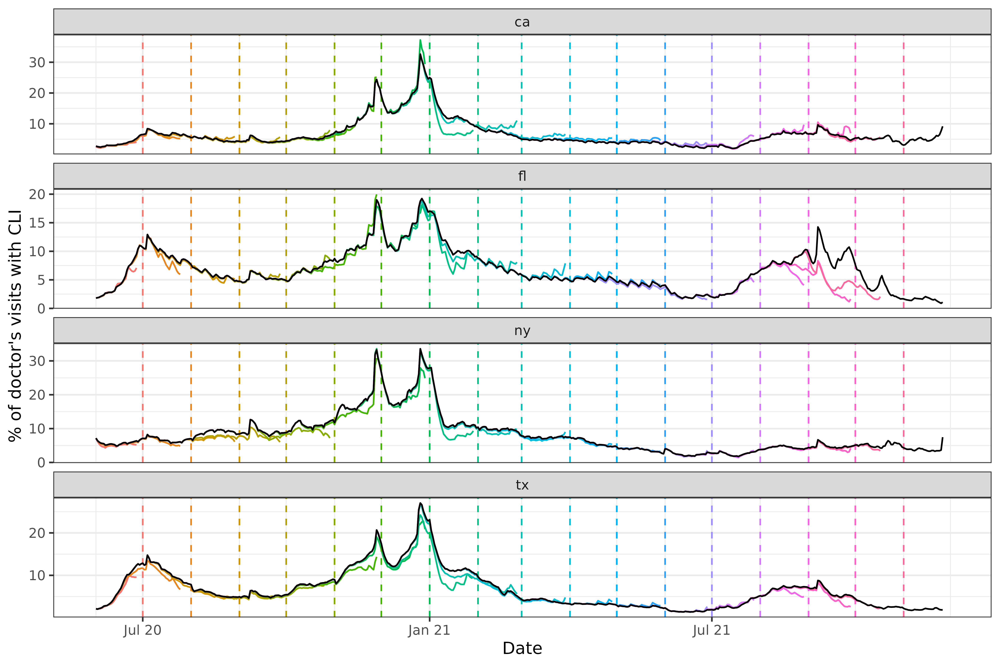

Working with epi_archive objects and data revisions
Source:vignettes/epi_archive.Rmd
epi_archive.RmdThe epi_archive data structure provided by
epiprocess provides convenient ways to work with data sets
that are subject to revision (a common occurrence in the public health
space, as situational awareness improves). In comparison to an
epi_df object, which can viewed as a data snapshot at a
point in time, an epi_archive object stores the full
version history of a data set. Paying attention to data revisions can be
important for all sorts of downstream data analysis and modeling
tasks.
In this vignette we will:
- construct an
epi_archiveobject from a data frame, - summarize revision behavior in the archive,
- produce snapshots of the data in
epi_dfform, - merge
epi_archiveobjects together, - provide a link to a backtesting forecasting models vignette.
Getting data into epi_archive format
We will work with a signal on the percentage of doctor’s visits with CLI (COVID-like illness) computed from medical insurance claims, available through the COVIDcast API. This signal is subject to very heavy and regular revision; you can read more about it on its API documentation page.
The data is included in this package (via the epidatasets
package) and can be loaded with:
library(epiprocess)
library(data.table)
library(dplyr)
library(purrr)
library(ggplot2)
# This fetches the raw data backing the archive_cases_dv_subset object.
dv <- archive_cases_dv_subset$DT %>%
as_tibble()The data can also be fetched from the Delphi Epidata API with the following query:
library(epidatr)
dv <- pub_covidcast(
source = "doctor-visits",
signals = "smoothed_adj_cli",
geo_type = "state",
time_type = "day",
geo_values = "ca,fl,ny,tx",
time_values = epirange(20200601, 20211201),
issues = epirange(20200601, 20211201)
) %>%
rename(version = issue, percent_cli = value)An epi_archive() object can be constructed from a data
frame, data table, or tibble, provided that it has (at least) the
following columns:
-
geo_value: the geographic value associated with each row of measurements. -
time_value: the time value associated with each row of measurements. -
version: the time value specifying the version for each row of measurements. For example, if in a given row theversionis January 15, 2022 andtime_valueis January 14, 2022, then this row contains the measurements of the data for January 14, 2022 that were available one day later.
As we can see from the above, the data frame returned by
epidatr::pub_covidcast() has the columns required for the
epi_archive format, with issue playing the
role of version. We can now use
as_epi_archive() to bring it into epi_archive
format.
dv_archive <- dv %>%
select(geo_value, time_value, version, percent_cli) %>%
as_epi_archive(compactify = TRUE)
dv_archive
#> → An `epi_archive` object, with metadata:
#> ℹ Min/max time values: 2020-06-01 / 2021-11-30
#> ℹ First/last version with update: 2020-06-02 / 2021-12-01
#> ℹ Versions end: 2021-12-01
#> ℹ A preview of the table (119316 rows x 4 columns):
#> Key: <geo_value, time_value, version>
#> geo_value time_value version percent_cli
#> <char> <Date> <Date> <num>
#> 1: ca 2020-06-01 2020-06-02 NA
#> 2: ca 2020-06-01 2020-06-06 2.140116
#> 3: ca 2020-06-01 2020-06-08 2.140379
#> 4: ca 2020-06-01 2020-06-09 2.114430
#> 5: ca 2020-06-01 2020-06-10 2.133677
#> ---
#> 119312: tx 2021-11-26 2021-11-29 1.858596
#> 119313: tx 2021-11-27 2021-11-28 NA
#> 119314: tx 2021-11-28 2021-11-29 NA
#> 119315: tx 2021-11-29 2021-11-30 NA
#> 119316: tx 2021-11-30 2021-12-01 NASee the epi_archive() documentation for more information
about its internal structure.
Producing snapshots in epi_df form
A key method of an epi_archive class is
epix_as_of(), which generates a snapshot of the archive in
epi_df format. This represents the most up-to-date values
of the signal variables as of a given version.
edf <- epix_as_of(dv_archive, as.Date("2021-06-01"))
print(edf)
#> An `epi_df` object, 1,460 x 3 with metadata:
#> * geo_type = state
#> * time_type = day
#> * as_of = 2021-06-01
#>
#> # A tibble: 1,460 × 3
#> geo_value time_value percent_cli
#> * <chr> <date> <dbl>
#> 1 ca 2020-06-01 2.75
#> 2 ca 2020-06-02 2.57
#> 3 ca 2020-06-03 2.48
#> 4 ca 2020-06-04 2.41
#> 5 ca 2020-06-05 2.57
#> 6 ca 2020-06-06 2.63
#> # ℹ 1,454 more rows
print(max(edf$time_value))
#> [1] "2021-05-31"Note that that the max time value in the epi_df object
is May 29, 2021, even though the specified version date was June 1, 2021
(note that the as_of field printed above helps us see the
date of the snapshot). From this we can infer that the doctor’s visits
signal was 2 days latent on June 1.
Now, let’s investigate how much this data was revised. We will plot
the most up-to-date version of the time series in black
(edf_latest below) and then overlay several revisions from
the archive, spaced one month apart, as colored lines
(snapshots below). We will also mark the version dates with
dotted vertical lines.
edf_latest <- epix_as_of(dv_archive, dv_archive$versions_end)
max_version <- max(dv_archive$DT$version)
versions <- seq(as.Date("2020-06-01"), max_version - 1, by = "1 month")
monthly_snapshots <- map(versions, function(v) {
epix_as_of(dv_archive, v) %>% mutate(version = v)
}) %>%
bind_rows(
edf_latest %>% mutate(version = max_version)
) %>%
mutate(latest = version == max_version)
ggplot(
monthly_snapshots %>% filter(!latest),
aes(x = time_value, y = percent_cli)
) +
geom_line(aes(color = factor(version)), na.rm = TRUE) +
geom_vline(aes(color = factor(version), xintercept = version), lty = 2) +
facet_wrap(~geo_value, scales = "free_y", ncol = 1) +
scale_x_date(minor_breaks = "month", date_labels = "%b %y") +
labs(x = "Date", y = "% of doctor's visits with CLI") +
theme(legend.position = "none") +
geom_line(
data = monthly_snapshots %>% filter(latest),
aes(x = time_value, y = percent_cli),
inherit.aes = FALSE, color = "black", na.rm = TRUE
)
We can see some interesting and highly nontrivial revision behavior: at some points in time the provisional data snapshots grossly underestimate the latest curve (look in particular at Florida close to the end of 2021), and at others they overestimate it (both states towards the beginning of 2021), though not quite as dramatically. Modeling the revision process, which is often called backfill modeling, is an important statistical problem in it of itself.
Summarizing revision behavior
There are many ways to examine how signals change across revisions.
We provide the convenient analysis wrapper
revision_summary(), which computes simple summary
statistics for each key (by default, (geo_value,time_value)
pairs). In addition to the per key summary, it also returns an overall
summary. Here is an a sample of the output:
revision_details <- revision_summary(dv_archive, print_inform = TRUE)
#> Min lag (time to first version):
#> min median mean max
#> 3 days 3 days 3.5 days 12 days
#> Fraction of epi_key+time_values with
#> No revisions:
#> • 0 out of 1,956 (0%)
#>
#> Quick revisions (last revision within 3 days of the `time_value`):
#> • 0 out of 1,956 (0%)
#>
#> Few revisions (At most 3 revisions for that `time_value`):
#> • 0 out of 1,956 (0%)
#>
#>
#> Fraction of revised epi_key+time_values which have:
#> Less than 0.1 spread in relative value:
#> • 91 out of 1,956 (4.65%)
#>
#> Spread of more than 2.22056495 in actual value (when revised):
#> • 671 out of 1,956 (34.3%)
#>
#> days until within 20% of the latest value:
#> min median mean max
#> 3 days 5 days 9.1 days 67 daysWe can see from the output that, as mentioned above, this data set has a lot of revisions: there are no keys that have no revision at all and 34% of the keys change by 10% or more when revised.
To do more detailed analysis than is possible with the above
printing, we can inspect the returned revision_details
tibble. Here we collect a number of statistics for each state:
revision_details %>%
group_by(geo_value) %>%
summarise(
n_rev = mean(n_revisions),
min_lag = min(min_lag),
max_lag = max(max_lag),
spread = mean(spread),
rel_spread = mean(rel_spread),
time_near_latest = mean(time_near_latest)
)
#> # A tibble: 4 × 7
#> geo_value n_rev min_lag max_lag spread rel_spread time_near_latest
#> <chr> <dbl> <drtn> <drtn> <dbl> <dbl> <drtn>
#> 1 ca 56.4 3 days 74 days 2.53 0.304 11.278119 days
#> 2 fl 56.4 3 days 74 days 2.29 0.280 10.830266 days
#> 3 ny 56.4 3 days 74 days 1.98 0.206 6.977505 days
#> 4 tx 56.4 3 days 74 days 1.63 0.218 7.398773 daysMost of the states have similar stats on most of these features,
except for the time_near_latest stat, which is the amount
of time that it takes for the revisions to converge to within 20% of the
final value and stay there. It is the highest for CA and the lowest for
TX.
Merging epi_archive objects
A common operation on datasets is merging (or joining) them together,
such as when we grab data from multiple sources for joint analysis or
modeling. Merging two epi_archive objects together is a bit
tricky however, since we need to handle datasets that might get revised
at different times. The function epix_merge() is made to
smooth this out. Below we merge the working epi_archive of
versioned percentage CLI from outpatient visits to another one of
versioned COVID-19 case reporting data, which we fetch the from the COVIDcast
API, on the rate scale (counts per 100,000 people in the
population).
library(epidatr)
y <- pub_covidcast(
source = "jhu-csse",
signals = "confirmed_7dav_incidence_prop",
geo_type = "state",
time_type = "day",
geo_values = "ca,fl,ny,tx",
time_values = epirange(20200601, 20211201),
issues = epirange(20200601, 20211201)
) %>%
select(geo_value, time_value, version = issue, case_rate_7d_av = value) %>%
as_epi_archive(compactify = TRUE)
dv_cases_archive <- epix_merge(dv_archive, y, sync = "locf", compactify = TRUE)
print(dv_cases_archive)#> → An `epi_archive` object, with metadata:
#> ℹ Min/max time values: 2020-06-01 / 2021-11-30
#> ℹ First/last version with update: 2020-06-02 / 2021-12-01
#> ℹ Versions end: 2021-12-01
#> ℹ A preview of the table (129638 rows x 5 columns):
#> Key: <geo_value, time_value, version>
#> geo_value time_value version percent_cli case_rate_7d_av
#> <char> <Date> <Date> <num> <num>
#> 1: ca 2020-06-01 2020-06-02 NA 6.628329
#> 2: ca 2020-06-01 2020-06-06 2.140116 6.628329
#> 3: ca 2020-06-01 2020-06-07 2.140116 6.628329
#> 4: ca 2020-06-01 2020-06-08 2.140379 6.628329
#> 5: ca 2020-06-01 2020-06-09 2.114430 6.628329
#> ---
#> 129634: tx 2021-11-26 2021-11-29 1.858596 7.957657
#> 129635: tx 2021-11-27 2021-11-28 NA 7.174299
#> 129636: tx 2021-11-28 2021-11-29 NA 6.834681
#> 129637: tx 2021-11-29 2021-11-30 NA 8.841247
#> 129638: tx 2021-11-30 2021-12-01 NA 9.566218Note that we have used the sync = "locf" argument to
specify that we want to synchronize the two datasets on their disjoint
revisions by using the last observation carried forward (LOCF). For more
information, see epix_merge().
Backtesting forecasting models
One of the most common use cases of
epiprocess::epi_archive() object is for accurate model
backtesting. See
vignette("backtesting", package="epipredict") for an
in-depth demo, using a pre-built forecaster in that package.
Attribution
This document contains a dataset that is a modified part of the COVID-19 Data Repository by the Center for Systems Science and Engineering (CSSE) at Johns Hopkins University as republished in the COVIDcast Epidata API. This data set is licensed under the terms of the Creative Commons Attribution 4.0 International license by the Johns Hopkins University on behalf of its Center for Systems Science in Engineering. Copyright Johns Hopkins University 2020.
The percent_cli data is a modified part of the COVIDcast
Epidata API Doctor Visits data. This dataset is licensed under the
terms of the Creative Commons
Attribution 4.0 International license. Copyright Delphi Research
Group at Carnegie Mellon University 2020.